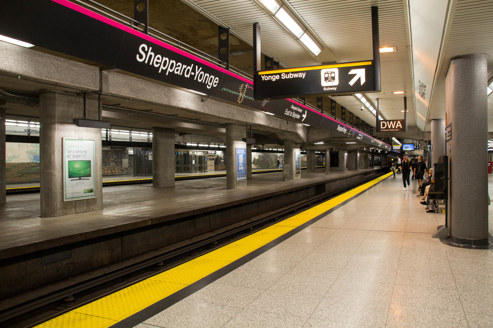
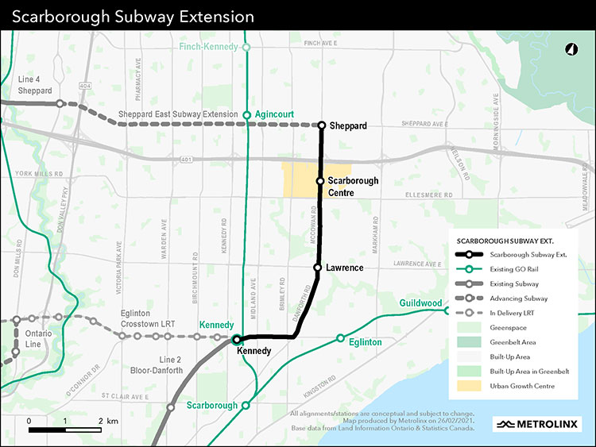
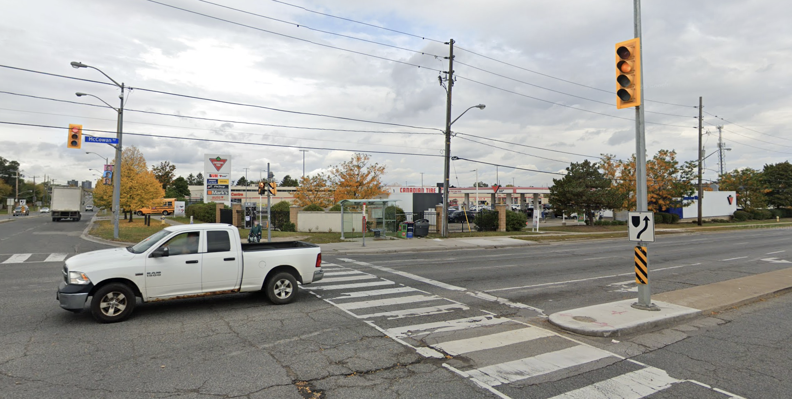
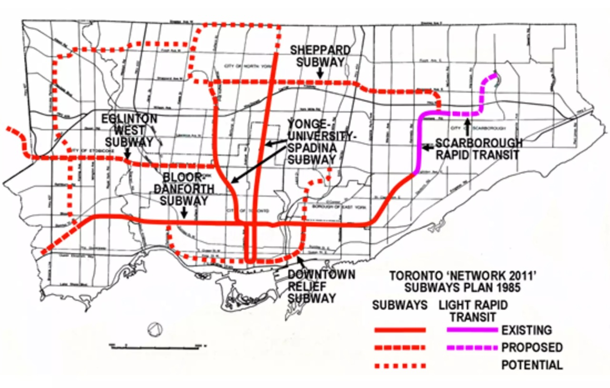
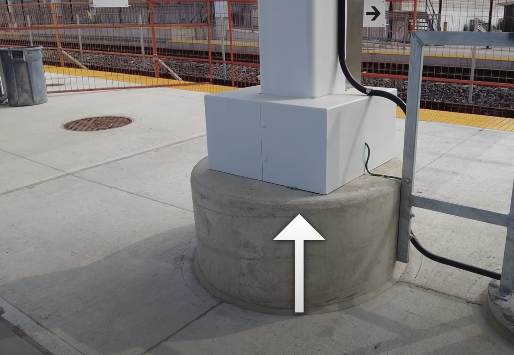

What the Scarborough Subway Extension indicates about the future of planning
Richard Li
May 24, 2023
Toronto transit is expanding faster than ever. After decades of hiatus, political and bureaucratic back-and-forth, and cancelled plans, it seems that for the first time, the next decade of transit will be revolutionary.
So why is this a problem?
Think of all the current issues with the transit system we are currently trying to fix. Bloor-Yonge station, Line 1 and Line 2’s main interchange, is dangerously overcrowded. Why? It was never designed to be an interchange. But now? It is the chokepoint of millions of daily commuters, and with development near the station far denser than that of the 1950s, it is now incredibly costly (up in the billions of dollars) to make even minor expansions and modifications to the station (which actually is being done, thankfully).
Yet, it seemed that we learned from our mistakes. When Line 4 Sheppard was built, it was built with forethought. Enough forethought that Sheppard-Yonge station was etched in with a Spanish solution third platform, which, if need be, would alleviate crowding caused by transferring commuters at this station. We have not yet reached this level, meaning that the planners have likely future-proofed this station for up to half a century.

Wikipedia
Similarly, all stations on the Sheppard line have been built with provisions to extend stations from their current length of 4 subway cars up to 6 cars in length—something that will no doubt occur in future decades when Toronto’s suburbs grow further, and will save billions of future taxpayer dollars.
But it seems now that this legacy is not being honoured.
Decades overdue, the SSE is finally happening, and shovels are in the ground. Line 2 is finally being extended further into Scarborough and up north. By no means do I believe that this project is flawed or should not be constructed, but the planning of the current project leaves much to be desired.

Metrolinx
My first and most underlying gripe is with the choice of right-of-way used for the line. With an existing right of way—the now defunct Scarborough RT—being available right at Kennedy station, we are choosing to not use it but to rather use costly tunnel-boring to dig under what is mostly suburban land.
This alignment has pros—mainly that the new Lawrence East station will be in a better position, ready to serve the Scarborough Health Network’s General Branch. Using a tunnel boring machine, while adding to the cost of this multi-billion dollar project, will ensure that construction—and god forbid, delays—will not affect the street level like they did on the Eglinton Crosstown project.
Plus, Metrolinx has managed to acquire the funding for this process, so why care? Well, the lavish project philosophy, and construction delays—if they occur—will drain Metrolinx’s already drained bank account even more, taking away precious funds from other necessary projects, like the Scarborough East and West Subway Extension and the Line 5 Extension to Pearson Airport.
Sometimes, I think that this project is the result throwing funds to finally deliver an extension out of frustration that it hasn’t been constructed earlier, thus causing it to lack the creativity in planning to deliver practicality.
Currently, the terminus station, “Sheppard,” serves a Canadian Tire and a few local suburbs. As a former resident of the area, I am pleased this area is finally receiving upscale, high-quality rapid transit service.

Google Maps
Yet this presents a major missed opportunity. Current Metrolinx proposals call for the Line 4 Sheppard East Subway Extension to meet Line 2 at Sheppard station.
My question is, why Sheppard station? Running Line 4 “Sheppard” under Sheppard Avenue seems intuitive, but when it comes to subway planning, we need to look beyond street alignments to find optimal routes that serve *subway* riders.

Network 2011
Many previous Sheppard East subway extensions typically called for Line 4 to be diverted south before McCowan and be extended to Scarborough Centre Station, and for good reason. Scarborough Centre serves not only a shopping mall and condominium development but also a transit hub bombilating with local, express, regional (GO bus) and long-distance bus services to cities like New York. We’re only solidifying its role as a multifunctional transit hub with the construction of the Scarborough-Durham BRT.
To tell residents along the Sheppard Line to make 1 extra transfer to go 1 extra stop to Scarborough Centre for their transfer because we decided to run Line 4 to Sheppard is a clear lack of care for the end consumer—the riders.
An alternative? Reece Martin of RMTransit once proposed that Line 2 and 4 be interlined and connected at Sheppard East. I think this idea has great potential—it would alleviate the transfer issue and open up a new world of one seat rides across Scarborough and North York from Fairview to STC, SHN General to Agincourt GO, Sheppard-Yonge to Kennedy.
There are logistics that must be dealt with under this plan. Line 4 stations must be extended to 6 cars, but like I mentioned earlier, this is an opportunity that past planners blessed us with by thinking decades forward.
Additionally, delays would affect both lines, but CBTC (also known as ATC), increased train reliability of the future Line 2 fleet, and turn-back switches all provide ways to alleviate this issue.
This plan is a great solution, but therein lies the problem. Such a solution would require an alignment where Line 2 does not terminate northward-facing, as it is already being constructed to do. There are no current provisions for interlining. Rather, Line 2 and Line 4 are perpendicular. Constructing the extensions this way makes it extremely unattractive for any extensions, like interlining Line 2 with Line 4.
Line 2’s terminus facing northward suggests future extensions northward up McCowan Road, possibly to Markham. However, nearby is the Stouffville GO corridor, which is being upgraded to 15 minutely service and will serve many important destinations in Scarborough and Markham. It’ll be many decades until an upgraded Stouffville GO sees ridership warranting even the consideration of a second corridor, or Markham’s population grows enough to demand it.
Thus, the problem is that, like with Kennedy Station in the 70s, there is little thought being put into the project past the completion of the construction of the project. The alignment sets up a line whose future role in Toronto is unnecessary to serve Markham, unattractive to serve North York and the rest of Scarborough, and unlikely to serve Malvern.
Transittoronto.ca
The Scarborough RT was a great example of saving money by using right-of-ways that already exist. This is a philosophy that changed the lives of thousands of people. There are also right-of-ways past McCowan, to Centennial College, up Progress Avenue, to the abandoned rail tracks that Line 2 uses, all the way to Malvern, that Line 3 could have been extended on. This would have served countless people without costing too much in construction.
By throwing out the Scarborough RT right-of-way, we are throwing out our win-win opportunity: to use existing right of ways to save cost and to connect essential destinations like Centennial College and Malvern to the rest of the city.
Don’t get me wrong, McCowan and Sheppard is also an essential place to be served by the system, but the magnitude at which it benefits from an extension is limited. The intersection is sparsely populated, already served by frequent 129 and express 939 bus services. Compare that to Malvern and Centennial College—places that would greatly benefit from a faster link to Scarborough Centre, and outnumber Sheppard and McCowan by both station count and people. This likely remains true even when considering extending Line 2 to Woodside Square or Milliken Park.
Ironically, the reason we suffer with this issue today—the reason we can’t easily connect Line 2 to the Scarborough RT ROW—is due to the planners of 1970s, who decided to align Kennedy Station parallel to the roads instead of along the abandoned rail right-of-way that Line 2 followed in that stretch. Thanks to this and the low turning radius of the Toronto subway’s T1 fleet, it is nearly impossible to create a turnback to allow Line 2 trains to use the Scarborough RT right of way. But part of me wonders if we could have shortened the length of our subway cars if it meant this possibility.
Looking forward, there is hope. By no means is Toronto transit completely devoid of forethought, and I’m glad to see the provisions being made, like raised concrete pillars on newly revamped GO stations that will allow for a platform height increase in the future. Simple provisions like this may be easily looked over today, but will save major headaches and dollars in the future. These are the necessary critiques we should be paying attention to; ultimately so that we do not pay more to gain less.

RMTransit
Transit projects are decade-long, and this is the scale we should be thinking on. So as we plan our next transit line, we should plan it for Toronto a century from now.